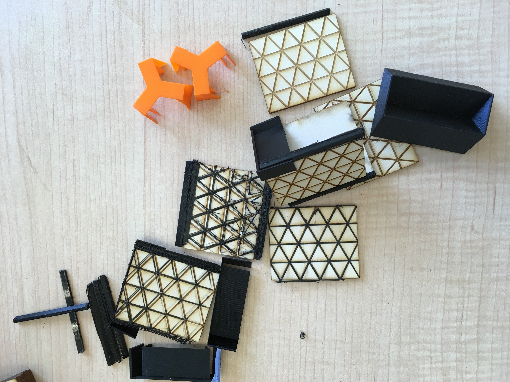
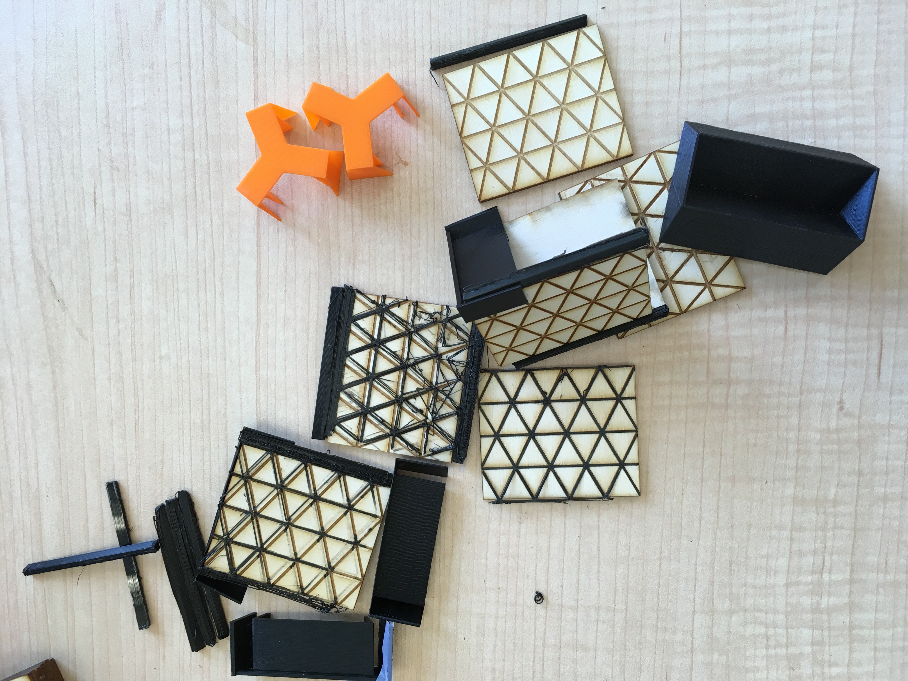

Attempt 1: failure

My plan for attempt 1 was to first print the corners of the triangle and than to ‘close’ the shape by printing on the pattern:

I printed a structure that acts like a spring:

My plan for attempt 1 was to first print the corners of the triangle and than to ‘close’ the shape by printing on the pattern:
I printed a structure that acts like a spring: